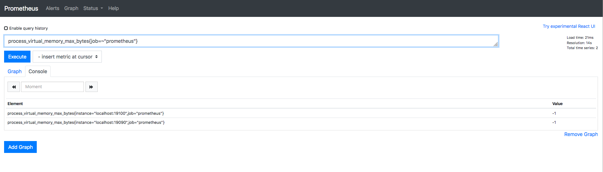

PromQL函数
PromQL函数详解
一些函数有默认的参数，例如：year(v=vector(time()) instant-vector)。v是参数值，instant-vector是参数类型。vector(time())是默认值。 对于Prometheus的PromQL函数这一块很重要，一定融会贯通，这样才可以很好的理解Prometheus核心，然后针对Rules警报复杂设计的时候，得心应手。 如果可以，最好深入的研究下源码中的一些逻辑，这样会很好的让你对Prometheus有更深的提高。
abs()¶
abs(v instant-vector) 返回输入向量中所有样本的绝对值。
示例中查询到的value为负数。
process_virtual_memory_max_bytes{job=~"prometheus"}
在 PromQL 语句中加入abs()函数，value为正数
abs(process_virtual_memory_max_bytes{job=~"prometheus"})absent()¶
absent(v instant-vector)，如果输入向量中具有样本数据，则返回空向量；如果传递的瞬时向量中没有样本数据，则返回不带度量指标名称且带有标签的样本值为1的结果 当监控度量指标时，如果获取到的样本数据是空的， 使用 absent 方法对告警是非常有用的
简单来说，判断输入的向量是否有数据，如果有返回空向量，如果没有返回1
示例中输入的PromQL语句带有数据，所以返回空向量
absent(process_virtual_memory_max_bytes{job=~"prometheus"})如果输入错误的PromeQL语句，比如查询一个不存在的job的时候，返回值为1
absent(process_virtual_memory_max_bytes{job=~"prometheus_1"})ceil()¶
ceil(v instant-vector) 向上舍入为最接近的整数。 示例中的values为0.18，那跟他最接近的整数是多少？答案是 1。
假如输入 node_load5 返回的值是浮点数。
node_load5如果使用 ceil 函数计算，返回值则是 1。
ceil(node_load5)changes()¶
changes(v range-vector) 输入一个区间向量， 返回这个区间向量内每个样本数据值变化的次数。
我们可以看到示例中查询这个向量五分钟之内的变化总共次数
node_load5[5m]现在我们用changes()函数统计一下有多少次变化，答案和上面查询的一样的数值。
changes(node_load5[5m])clamp_max()¶
clamp_max(v instant-vector, max scalar) 输入一个瞬时向量和最大值，样本数据值若大于max，则改为max，否则不变。
下面的查询该瞬时向量的值为16
sum(node_arp_entries)现在我们通过clamp_max()函数，将max值设置为20（瞬时向量值<20），所以我们应该看到显示的value为瞬时向量值
clamp_max(sum(node_arp_entries),20)我们将max值改成10（10<瞬时向量值），所以我们应该看到显示的value为max值
clamp_max(sum(node_arp_entries),10)clamp_min()¶
clamp_min(v instant-vector)输入一个瞬时向量和最大值，样本数据值小于min，则改为min。否则不变。
这个函数与上面的clamp_max()相反
max值大于瞬时值，显示max值
clamp_min(sum(node_arp_entries),20)max值小于瞬时值，显示瞬时值
clamp_min(sum(node_arp_entries),10)
scalar()¶
scalar(v instant-vector) 输入只有一个元素的瞬时向量，返回（key:value）=（”scalar”: 样本数值）。如果输入向量有多个元素，scalar则返回NaN。
而count()函数，输入一个瞬时向量，返回（key:value）=（向量：样本个数），其中结果中的向量允许通过by条件分组。
示例中因为精确到一个元素，所以显示 scalar: 30
scalar(node_arp_entries{device="ens18",instance="localhost:19100",job="prometheus"})因为元素有多个，所以显示 scalar: NaN
scalar(node_arp_entries)day_of_month()¶
day_of_month(v=vector(time()) instant-vector)返回给定UTC时间所在月的第几天。返回值范围：1~31。
示例所示time()为自1970年1月1日UTC以来的秒数。数值为23说明今天是本月第23天，实际返回的就是当前的日期，比如今天是20号，那么返回的数值就是20号。
day_of_month(vector(time()))day_of_week()¶
day_of_week(v=vector(time()) instant-vector)返回给定UTC时间所在周的第几天。返回值范围：0~6. 0表示星期天。 跟上面一样的意思，今天是周一的话，返回的值则是1。
day_of_week(vector(time()))days_in_month()¶
days_in_month(v=vector(time()) instant-vector)返回当月一共有多少天。返回值范围：28~31.
同理，7月一共31天，所以返回值是31。
days_in_month(vector(time()))delta()¶
delta(v range-vector)的参数是一个区间向量，返回一个瞬时向量。它计算一个区间向量 v 的第一个元素和最后一个元素之间的差值。由于这个值被外推到指定的整个时间范围， 所以即使样本值都是整数，你仍然可能会得到一个非整数值。例如，下面的例子返回过去两小时的 CPU 温度差：
delta(cpu_temp_celsius{host="zeus"}[2h]) 这个函数一般只用在 Gauge 类型的时间序列上。
示例中是统计一个节点上 cpu[0] 的1小时内的使用情况：
node_cpu_seconds_total{cpu='0',mode="idle"}[1h]使用上图两个数的差值跟下面的大体一样，因为是瞬时返回的向量值，这个值会有对应的差异，不过正常来说，差异不会太大。
delta(node_cpu_seconds_total{cpu='0',mode="idle"}[1h])deriv()¶
deriv(v range-vector)计算一个区间向量v中各个时间序列二阶导数，使用简单线性回归 deriv二阶导数返回值类型只能是gauges。
其实这个函数主要是预测区间变化率，比如使用此函数可以计算出
(简单来说，一阶导数是自变量的变化率，二阶导数就是一阶导数的变化率，看其变化的快慢，也就是一阶导数变化率的变化率。)
deriv(node_cpu_seconds_total{cpu='0',mode='idle'}[5m])exp()¶
exp(v instant-vector)输入一个瞬时向量, 返回各个样本值的e指数值，即为e的N次方。特殊情况如下所示：
Exp（+ Inf）= + Inf +Inf 是最高bucket的上限值，所以xxx_bucket是所有采样点的数量，是Prometheus自动增加的一个bucket。
exp(node_cpu_seconds_total{cpu='0',mode="idle"})Exp（NaN）= NaN 此时返回的值不代表聚合运算工作不正常，prometheus查询语句中分母值为0时，语句返回值会为NaN。因此，你不能把对比率加起来，这个比率其实就是类似于成人与儿童之比率是1比6。
你需要把分子和分母分别加起来，然后相除。
解决方案是设置一个对比率值去对比，因为分母值为0，我们已经不需要了，可以在运算中去除即可。
histogram_quantile(0.9, rate(prometheus_http_request_duration_seconds_bucket[10m])>0)例如以下语句
sum by (job, handler)(rate(prometheus_http_request_duration_seconds_sum[5m])>0)
/
sum by (job, handler)(rate(prometheus_http_request_duration_seconds_count[5m])>0)floor()¶
floor(v instant-vector)函数与 ceil() 函数相反，将 v 中所有元素的样本值向下四舍五入到最接近的整数。 很简单的一个函数，向下取最接近的整数。
floor(node_cpu_seconds_total{cpu='0',mode='user'})histogram_quantile()¶
histogram_quantile(φ float, b instant-vector) 从 bucket 类型的向量 b 中计算 φ (0 ≤ φ ≤ 1) 分位数（百分位数的一般形式）的样本的最大值。（有关 φ 分位数的详细说明以及直方图指标类型的使用，请参阅直方图和摘要。 向量 b 中的样本是每个 bucket 的采样点数量。每个样本的 labels 中必须要有 le 这个 label 来表示每个 bucket 的上边界，没有 le 标签的样本会被忽略。直方图指标类型自动提供带有 _bucket 后缀和相应标签的时间序列。 可以使用 rate() 函数来指定分位数计算的时间窗口。 例如，一个直方图指标名称为 prometheus_http_request_duration_seconds_bucket，要计算过去 10 分钟内 第 90 个百分位数，请使用以下表达式：
histogram_quantile(0.9, rate(prometheus_http_request_duration_seconds_bucket{handler="/api/v1/query"}[10m]))这表示最近 10 分钟之内 90% 的样本的最大值为 35.714285714285715。 这个计算结果是每组标签组合成一个时间序列。我们可能不会对所有这些维度（如 job、instance 和 method）感兴趣，并希望将其中的一些维度进行聚合，则可以使用 sum() 函数。 例如，以下表达式根据 job 标签来对第 90 个百分位数进行聚合：
histogram_quantile(0.9, sum(rate(prometheus_http_request_duration_seconds_bucket[10m])) by (job, le))注意
histogram_quantile 这个函数是根据假定每个区间内的样本分布是线性分布来计算结果的也就是说，
它的结果未必准确，最高的 bucket 必须是 le=”+Inf” (否则就返回 NaN)。
如果分位数位于最高的 bucket（+Inf） 中，则返回第二个最高的 bucket 的上边界。如果该 bucket 的上边界
大于 0，则假设最低的 bucket 的的下边界为 0，这种情况下在该 bucket 内使用常规的线性插值。
holt_winters()¶
holt_winters(v range-vector, sf scalar, tf scalar)基于区间向量v，生成事件序列数据平滑值。平滑因子sf越低, 对老数据越重要。 趋势因子tf越高，越多的数据趋势应该被重视0<sf,tf<=1。 holt_winters仅用于gauges。
hour()¶
hour(v=vector(time()) instant-vector) 函数返回被给定 UTC 时间的当前第几个小时，时间范围：0~23。
示例中显示的数值，已知当前时间是image，因为显示的是UTC时间，所以需要+8小时
hour(vector(time()))idelta()¶
idelta(v range-vector)输入一个区间向量，返回（key: value ）=（ 度量指标： 每最后两个样本值差值）。
这个函数跟delta()很相似,delta()是统计第一个和最后一个差值，而idelta()是统计最后两个的差值，也就是倒数第一个和倒数第二个
示例统计的是一个节点上某 cpu[0] mode="idle"" 10分钟内的使用情况`
node_cpu_seconds_total{cpu='0',mode="idle"}[10m]通过idelta()计算之后，确实跟上图最后两个的差值一样
increase()¶
increase(v range-vector)输入一个区间向量，返回：（key:value） = （度量指标：last值-first值），函数获取区间向量中的第一个和最后一个样本并返回其增长量, 它会在单调性发生变化时(如由于采样目标重启引起的计数器复位)自动中断。 由于这个值被外推到指定的整个时间范围，所以即使样本值都是整数，你仍然可能会得到一个非整数值。
nginx_server_requests{host="*",job="nginx-vts",code='total'}[5m]计算结果的值有略有差距
increase(nginx_server_requests{host="*",job="nginx-vts",code='total'}[5m])increase 的返回值类型只能是计数器类型，也就是counter，主要作用是增加图表和数据的可读性。使用 rate 函数记录规则的使用率，以便持续跟踪数据样本值的变化。
irate()¶
irate(v range-vector) 函数用于计算区间向量的增长率，但是其反应出的是瞬时增长率。irate 函数是通过区间向量中最后两个两本数据来计算区间向量的增长速率，它会在单调性发生变化时(如由于采样目标重启引起的计数器复位)自动中断。 这种方式可以避免在时间窗口范围内的“长尾问题”，并且体现出更好的灵敏度，通过irate函数绘制的图标能够更好的反应样本数据的瞬时变化状态。
nginx_server_requests{host="*",job="nginx-vts",code='total'}[5m]irate只能用于绘制快速移动的计数器。在长期趋势分析或者告警中更推荐使用 rate 函数。因为使用 irate 函数时，速率的简短变化会重置 FOR语句，形成的图形有很多波峰，难以阅读。
注意
当将 irate() 函数与聚合运算符（例如 sum()）或随时间聚合的函数（任何以 _over_time 结尾的函数）一起使用时，必须先执行 irate 函数，然后再进行聚合操作，否则当采样目标重新启动时 irate() 无法检测到计数器是否被重置。
rate()¶
label_join(v instant-vector, dst_label string, separator string, src_label_1 string, src_label_2 string, ...)
rate（v range-vector） 可以直接计算区间向量 v 在时间窗口内平均增长速率，它会在单调性发生变化时(如由于采样目标重启引起的计数器复位)自动中断。该函数的返回结果不带有度量指标，只有标签列表。
示例：以下表达式返回区间向量中每个时间序列过去 5 分钟内 HTTP 请求数的每秒增长率。
rate() 函数返回值类型只能用计数器，在长期趋势分析或者告警中推荐使用这个函数。
当将 rate() 函数与聚合运算符（例如 sum()）或随时间聚合的函数（任何以 _over_time 结尾的函数）一起使用时，必须先执行 rate 函数，然后再进行聚合操作，否则当采样目标重新启动时 rate() 无法检测到计数器是否被重置。
label_join（）¶
函数可以将时间序列 v 中多个标签 src_label 的值，通过 separator 作为连接符写入到一个新的标签 dst_label 中。可以有多个 src_label 标签。
例如，以下表达式返回的时间序列多了一个 join_test 标签，标签值为 apiserver,kubernetes：
up{endpoint="https",instance="192.168.1.210:6443",job="apiserver",namespace="default",service="kubernetes"}
label_join(up{endpoint="https",instance="192.168.1.210:6443",job="apiserver",namespace="default",service="kubernetes"}, "join_test", ",", "job", "service")返回结果：up{endpoint="https",instance="192.168.1.210:6443",job="apiserver",join_test="apiserver,kubernetes",namespace="default",service="kubernetes"} 1
在做一个测试，我们将带有 pod 标签的指标在添加一个标签名为 pod_name,值为 pod & container 标签，通过 _ 连接符，将 pod 和 container 的值连接一起变成 pod_name 标签的值。
kube_pod_container_resource_limits{container=~"grafana"}
# lable_join
label_join(kube_pod_container_resource_limits{container=~"grafana"},"pod_name","_","pod","container")返回结果：kube_pod_container_resource_limits{container="grafana",instance="10.240.36.115:8443",job="kube-state-metrics",namespace="monitoring",node="k8s-node1",pod="grafana-86b55cb79f-6n249",pod_name="grafana-86b55cb79f-6n249_grafana",resource="cpu",unit="core"}
label_replace（）¶
为了能够让客户端的图标更具有可读性，可以通过 label_replace 函数为时间序列添加额外的标签。label_replace 的具体参数如下：
label_replace(v instant-vector, dst_label string, replacement string, src_label string, regex string)
该函数会依次对 v 中的每一条时间序列进行处理，通过 regex 匹配 src_label 的值，并将匹配部分 relacement 写入到 dst_label 标签中。如下所示：
label_replace(up, "host", "$1", "instance", "(.*):.*")
函数处理后，时间序列将包含一个 host 标签，host 标签的值为 Exporter 实例的 IP 地址：
up{host="localhost",instance="localhost:8080",job="cadvisor"} 1
up{host="localhost",instance="localhost:9090",job="prometheus"} 1
up{host="localhost",instance="localhost:9100",job="node"} 1示例中我们匹配 service 这个 labels，只要符合表达式的都会添加一个 host 标签,其值为 6666
label_replace(up,"host","6666","service","(.*)-.*-.*")返回结果：
up{endpoint="http-metrics",host="6666",instance="192.168.1.210:10252",job="kube-controller-manager",namespace="kube-system",pod="kube-controller-manager-k8s-m1",service="kube-controller-manager"}
up{endpoint="https-self",host="6666",instance="10.240.36.115:9443",job="kube-state-metrics",namespace="monitoring",pod="kube-state-metrics-dbb85dfd5-8xtdh",service="kube-state-metrics"}predict_linear()¶
predict_linear(v range-vector,t scalar) 基于区间向量，使用简单的线性回归时间序列 t 秒的值，从而可以对时间序列的变化趋势做出预测。例如，根据过去2小时的时间样本数据，预测主机的可用磁盘空间在8小时内是否会被占满。
表达式：
predict_linear(node_filesystem_free_bytes{job="prometheus",mountpoint="/"}[2h], 8 * 3600 ) / 1024 / 1024ln（）¶
ln(v instance-vector)计算瞬时向量v中所有样本数据的自然对数。特殊情况：
ln(+Inf) = +Inf
ln(0) = -Inf
ln(x < 0) = NaN
ln(NaN) = NaNlog2（）¶
log2(v instant-vector) 函数计算瞬时向量v中所有样本数据以2为底的对数。特殊情况同上。
log10（）¶
log10(v instant-vector)函数计算瞬时向量v中所有样本数据以10为底的对数。相当于ln()。特殊情况同上。
minute（）¶
minute(v=vector(time()) instant-vector)返回给定UTC时间当前小时的第多少分钟。结果范围：0~59。
示例：
minute(vector(time()))
返回结果为当前小时的第n分钟，可以根据当前的系统时间对照下返回的标量。
month（）¶
month(v=vector(time()) instant-vector)返回给定UTC时间当前属于第几个月，结果范围：0~12。
示例：
month(vector(time()))
结果返回为 7 ， 现在的时间正好是本年的第七个月。
predict_linear（）¶
predict_linear（v range-vector，t scalar） 函数可以预测时间序列 v 在 t 秒后的值。它基于简单线性回归的方式，对时间窗口内的样本数据进行统计，从而可以对时间序列的变化趋势做出预测。该函数的返回结果不带有度量指标，只有标签列表。
示例：统计文件系统是ext4的磁盘的空闲空间有多大，基于2小时的样本数据预测磁盘空间是否会在4小时内占满。
predict_linear(node_filesystem_files_free{fstype="ext4"}[2h], 4 * 3600) < 0
我们可以看到磁盘空闲空间的value在减少，幅度很小是因为根据2小时内磁盘的写入，当前磁盘写入量很少，所以按照现在的趋势，2小时之后磁盘空间只会减少一点。
实例：使用nginx-vts-exporter根据5分钟内的访问量变化，预测1分钟之后访问量有多少。
predict_linear(nginx_server_requests{code="total",host="*",instance="192.168.1.220:9913"}[5m],10*6)
然后去访问配置好的nginx，1分钟之后预测的访问量有小幅度增加。
注意：此函数一般只用在 Gauge 类型的时间序列上。
resets（）¶
resets(v range-vector) 的参数是一个区间向量。对于每个时间序列，它都返回一个计数器重置的次数。两个连续样本之间的值的减少被认为是一次计数器重置。 这个函数一般只用在计数器类型的时间序列上。
round（）¶
round(v instant-vector, to_nearest=1 scalar) 函数与 ceil 和 floor 函数类似，返回向量中所有样本值的最接近的整数。to_nearest 参数是可选的,默认为 1,表示样本返回的是最接近 1 的整数倍的值。你也可以将该参数指定为任意值（也可以是小数），表示样本返回的是最接近它的整数倍的值。
范例：
node_cpu_seconds_total{cpu="0",instance="localhost:19100",job="prometheus",mode="idle"}
round(node_cpu_seconds_total{cpu="0",instance="localhost:19100",job="prometheus",mode="idle"})
返回结果为一个接近 1 的整数倍的值。
sort（）¶
sort(v instant-vector) 函数对向量按元素的值进行升序排序，返回结果：key: value = 度量指标：样本值[升序排列]。
范例：
sort(node_cpu_seconds_total)
返回为一个重新排列为升序的时间序列样本数据。
sort_desc（）¶
sort_desc(v instant-vector) 函数对向量按元素的值进行降序排序，返回结果：key: value = 度量指标：样本值[降序排列]。
范例：
sort_desc(node_cpu_seconds_total)
返回结果为降序的时间序列样本数据。
sqrt（）¶
sqrt(v instant-vector) 函数计算向量 v 中所有元素的平方根。
范例：
sqrt(node_cpu_seconds_total)
返回结果为所有向量中的值的平方根。
time（）¶
time() 函数返回从 1970-01-01 到现在的秒数。注意：它不是直接返回当前时间，而是时间戳。
timestamp（）¶
timestamp（v instant-vector）返回给定向量的每个样本的时间戳，作为自1970年1月1日UTC以来的秒数。
范例：
timestamp(node_cpu_seconds_total)
返回结果为指标node_cpu_seconds_total的每个脚本的时间戳。
vector（）¶
vector(s scalar)函数，返回：（key: value）= （{}, 传入参数值）。
范例：
vector(1) vector(time())
返回为传入的值。
year（）¶
year（v = vector（time（））instant-vector）返回UTC中每个给定时间的年份。
_over_time()¶
下面的函数列表允许传入一个区间向量，它们会聚合每个时间序列的范围，并返回一个瞬时向量：
-
avg_over_time(range-vector) : 区间向量内每个度量指标的平均值。
-
min_over_time(range-vector) : 区间向量内每个度量指标的最小值。
-
max_over_time(range-vector) : 区间向量内每个度量指标的最大值。
-
sum_over_time(range-vector) : 区间向量内每个度量指标的求和。
-
count_over_time(range-vector) : 区间向量内每个度量指标的样本数据个数。
-
quantile_over_time(scalar, range-vector) : 区间向量内每个度量指标的样本数据值分位数，φ-quantile (0 ≤ φ ≤ 1)。
-
stddev_over_time(range-vector) : 区间向量内每个度量指标的总体标准差。
-
stdvar_over_time(range-vector) : 区间向量内每个度量指标的总体标准方差。
即使区间向量内的值分布不均匀，它们在聚合时的权重也是相同的。